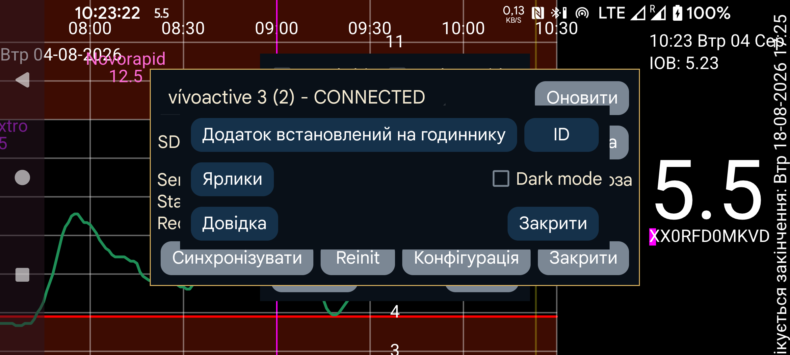

ar be de es fr hi it ja nl pl pt ru tr uk uz zh en
Вихідний код Kerfstok можна завантажити з https://www.juggluco.nl/Kerfstok/Kerfstok-source.html. Користувачі можуть вільно його змінювати. Кожна програма годинника має унікальний ідентифікатор. Якщо він відрізняється від типового, Juggluco має знати його для зв’язку з програмою на годиннику. Щоб указати інший ідентифікатор, натисніть ID і введіть 32-символьний шістнадцятковий рядок. Juggluco на одному пристрої може бути підключено лише до однієї програми на одному годиннику. Зміни призведуть до втрати даних.
Швидкі команди надсилаються до програми Kerfstok на годиннику Garmin, щоб полегшити введення певних значень.
Визначає, чи має Kerfstok показувати білий текст на чорному тлі замість чорного на білому.